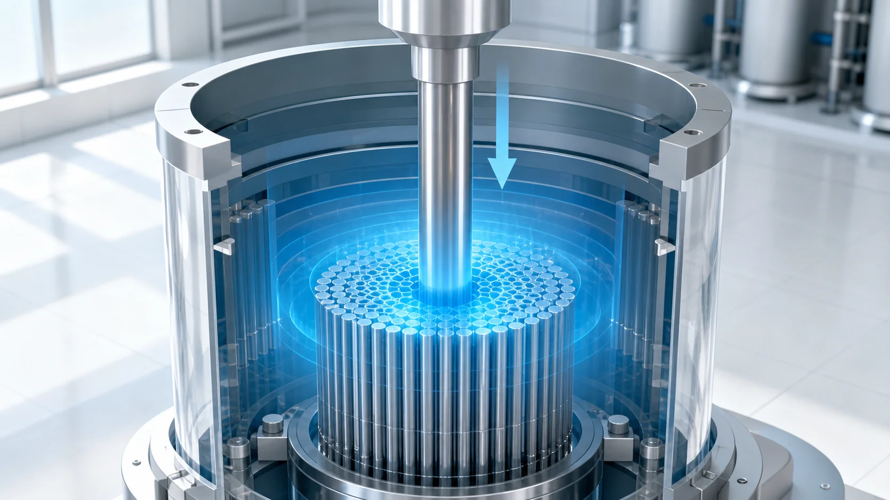
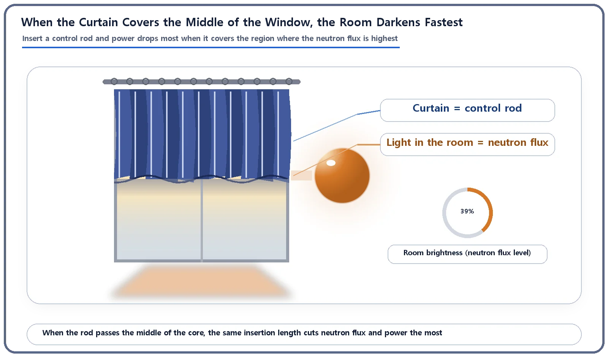
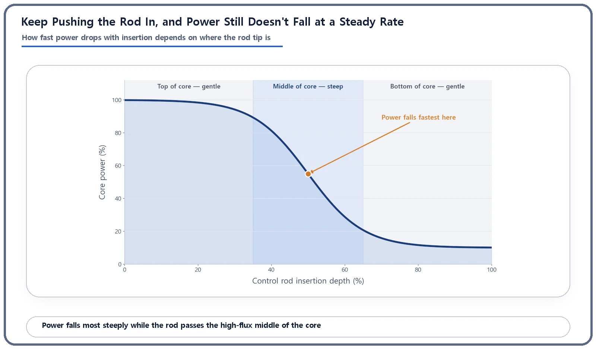

Reactor Kinetics & Reactivity · 110
Like Drawing the Curtains — How Control Rod Insertion Brings Reactor Power Down
Inserting a control rod makes reactivity negative; power falls in two stages, fastest where the neutron flux is highest.

Pushing a control rod deeper into the core absorbs more neutrons, lowers the multiplication factor and makes reactivity negative, so power falls. The fall comes in two stages: a quick drop on the scale of the neutron generation time, then a gradual decline over seconds to tens of seconds as delayed neutrons die away. And because neutron flux peaks near the middle of the core, power against insertion depth traces an S-shaped curve.
Why the room darkens unevenly
Have you ever drawn the curtains in the evening? Pull them down slowly along the rod, and the sunlight in the room doesn't vanish all at once; it fades gradually. Watch closely, though, and you notice something odd. While the curtain covers the top of the window, the room hardly seems to darken. When it reaches the middle of the window, the room suddenly goes noticeably dimmer. And as it covers the bottom part, the darkening slows down again.
Something very similar happens when control rods are inserted into a reactor core. What control rods are made of and what they are for is a topic of its own, so here we follow just one thing: how the act of pushing a control rod deeper into the core actually brings reactor power down over time.
Curtain = control rod, light in the room = neutron flux
First, the mapping. The strength of the sunlight coming through the window corresponds to how actively neutrons are moving through the core: the neutron flux. The curtain is the control rod. Lowering the curtain to cover more of the window lets less light into the room; pushing a control rod deeper into the core absorbs a larger share of neutrons, and the neutron flux falls.
One caution. A curtain blocks and absorbs light; it doesn't press on the room or make it smaller. Likewise, a control rod does not physically press on or push away the fuel. The material inside it (boron, hafnium and so on) simply absorbs neutrons and removes them. That absorption lowers the multiplication factor (how much the neutron population grows from one generation to the next), which had been holding the reactor in balance, and so reactivity (how far the reactor is from that balance) shifts in the negative direction. Negative reactivity is itself the signal that power has started moving downward.

Once reactivity turns negative, how does power fall?
Negative reactivity doesn't mean power drops in one go and is done. This is the heart of the matter: the decline happens in two stages.
Stage 1: the quick drop. The instant reactivity turns negative, core power first falls quickly over a very short time, on the order of the neutron generation time (tens to hundreds of microseconds). That is because the prompt-neutron population adjusts almost instantly to the new conditions. At this point the "stock" that will later release delayed neutrons (the precursors) is still at its previous level, so the drop grows with the size of the reactivity but does not fall without limit. In curtain terms, it is the split second when you yank the curtain and the brightness right at the window cuts out.
Stage 2: the gradual decline. After the quick drop, the pace is set by the precursors slowly decaying and releasing delayed neutrons. This is a leisurely decline over seconds, or even tens of seconds, slow enough for an operator to follow on the instruments. When rod insertion stops and reactivity returns to near zero, power goes through this gradual decline and settles at a new, lower level.
One misunderstanding to clear up: however large it is, the reactivity created by inserting a control rod is always negative. So this situation has nothing to do with "prompt critical" or "prompt supercritical," boundaries that matter only when reactivity grows in the positive direction. The two are not the same kind of story.
In practice, nobody drops the curtain in an instant
So far we assumed reactivity was inserted all at once. In real operation, control rods don't drop to a set depth in an instant (that is the emergency shutdown, a completely different special case covered elsewhere). Usually they are pushed in steadily at a set speed.
Then the rate at which power falls depends on two things: how fast the rod is pushed in, and, perhaps surprisingly, where in the core the rod tip is passing. The neutron flux in a core is not the same everywhere: it is usually most active near the middle of the core and quieter toward the top and bottom edges. So pushing the rod the same extra length absorbs many more neutrons, and lowers reactivity much more, when that stretch passes the busy middle of the core. Passing the quieter top or bottom, the same length changes reactivity far less.
Back to the curtain. Suppose the sunlight isn't even across the window: the sun is level with the window, so the beam through the middle is especially bright. Lower the curtain from the top and at first it covers the relatively dim upper part, so the room barely changes. When it covers the bright middle, the room darkens sharply. When it finally covers the dim lower part, the change slows again. The feeling from the start was an accurate physical match.
Plot core power against control rod insertion depth (pushing steadily from 0% to 100%) and you get an S-shaped curve: a gentle decline at first, the steepest drop around the middle, then gentle again. This position-dependent effect has a formal name and definition of its own, a subject for another article, so for now just keep this qualitative picture in mind. The exact shape of the curve depends on the core's size, whether it has a reflector, and how many control rods there are and where they sit.

Why this matters in real operation
Knowing both facts, the quick-drop-then-gradual-decline pattern and the depth-dependent rate of reactivity change, lets an operator judge in advance how sharply power will respond in the stretch the rod is now passing. Core designers also take this position-dependent sensitivity into account when choosing the number, layout and insertion sequence of control rods, so that no overly abrupt reactivity change happens at once.
All of this concerns a normal, everyday action: inserting negative reactivity to lower power. An emergency shutdown, all rods in fully and fast, is an extreme special case discussed elsewhere.
Two common misunderstandings
Misunderstanding 1: "Insert a control rod and power stops right there." No. After the quick drop, a gradual decline as the delayed-neutron flow dies away continues for seconds, and it takes time to settle at a new steady level.
Misunderstanding 2: "The same insertion length always has the same reactivity effect." No. Passing where the neutron flux is high (usually the middle of the core), the same length changes reactivity much more than at the quieter edges.
Key takeaways
Inserting a control rod increases the share of neutrons absorbed, making reactivity negative, and power starts to fall.
The decline takes two stages: a quick drop on the scale of the generation time, then a gradual decline on the scale of the delayed neutrons.
Real insertion is gradual, and the same length changes reactivity by different amounts depending on where the rod tip is (most sensitive near the middle of the core), so power versus insertion depth traces an S-shaped curve: gentle, steep, gentle.
Rod insertion always adds negative reactivity, so it has nothing to do with prompt critical or prompt supercritical, which matter only when reactivity increases.